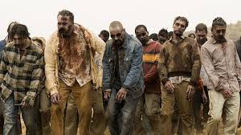

The Need for More Truth Values

- The undead script writing nightmare
- Characters are alive, or dead, or undead, or have not appeared
- All characters are alive or have been buried
- Alive characters need words and placement
- Dead (not alive) characters need no words but need placement
- There are four characters:
- Alan, who is alive
- Désirée, who is dead and buried
- Umberto, who is undead
- Nigel, who has not appeared
- Questions the script writer might ask include:
- Does Désirée need words?
- Is Nigel alive or (inclusively) not alive?
- Does Nigel need placement?
- Is Umberto both alive and not alive?
- Has Umberto been buried?
- Was Désirée buried because she is not alive?
- TPTP syntax
- Results